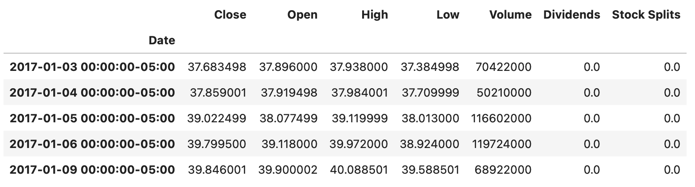
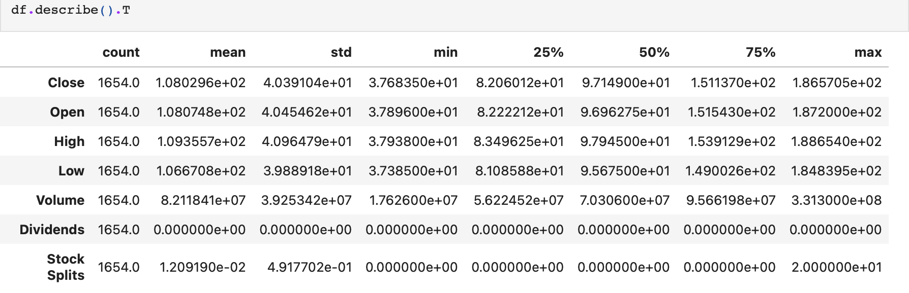
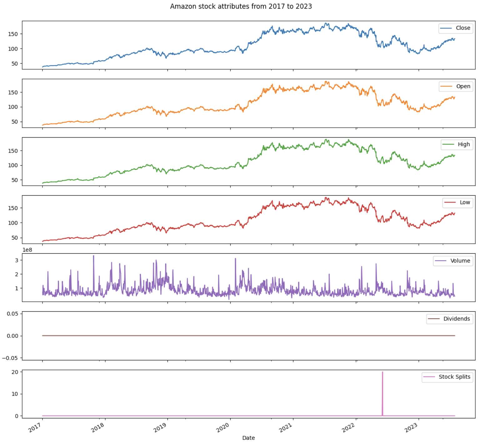
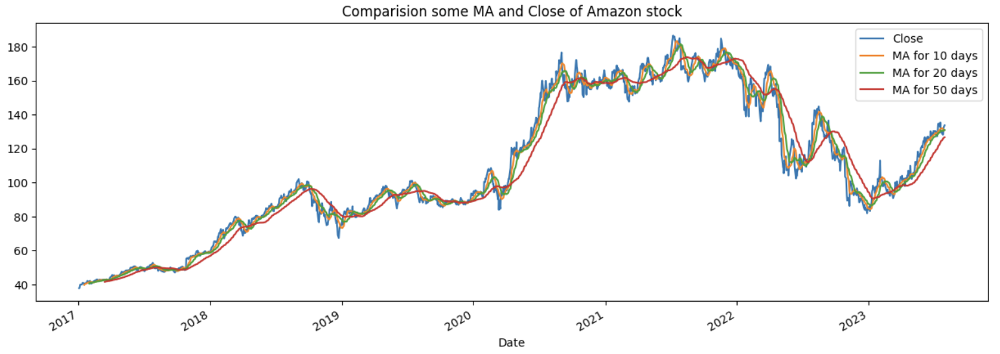
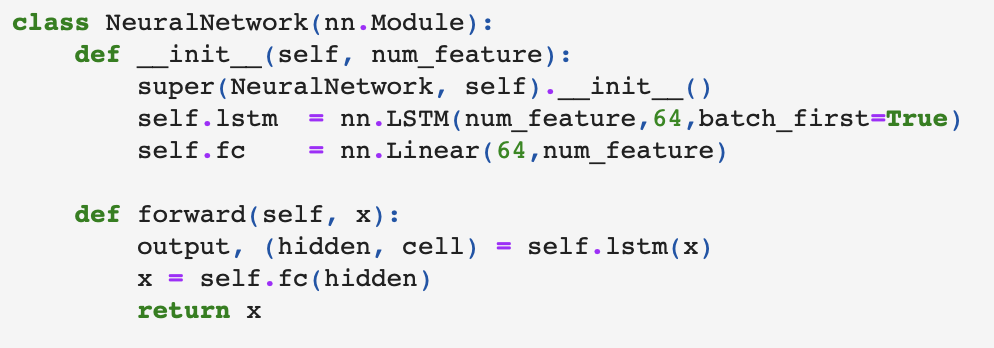
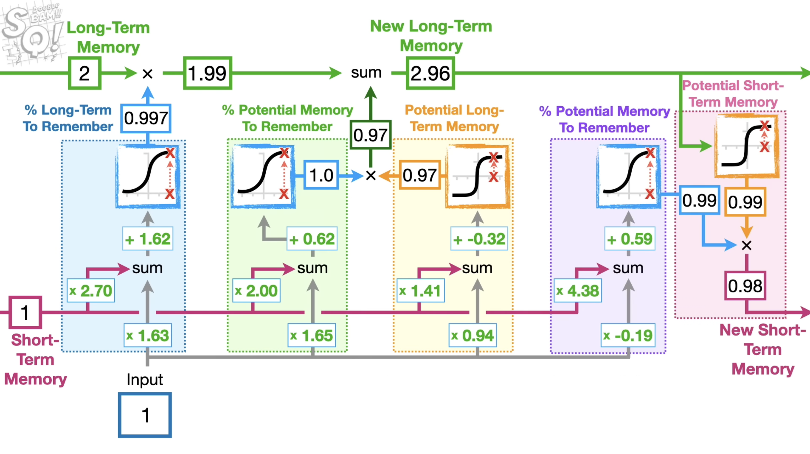
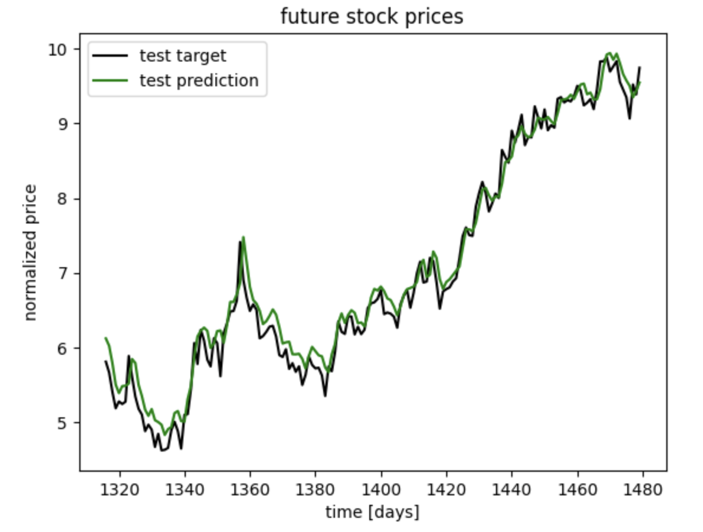
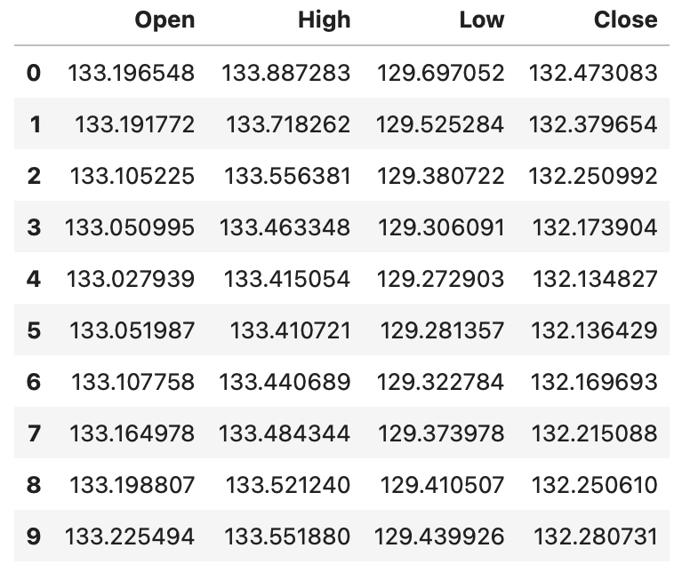
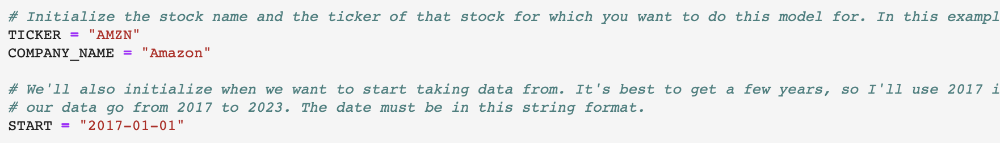
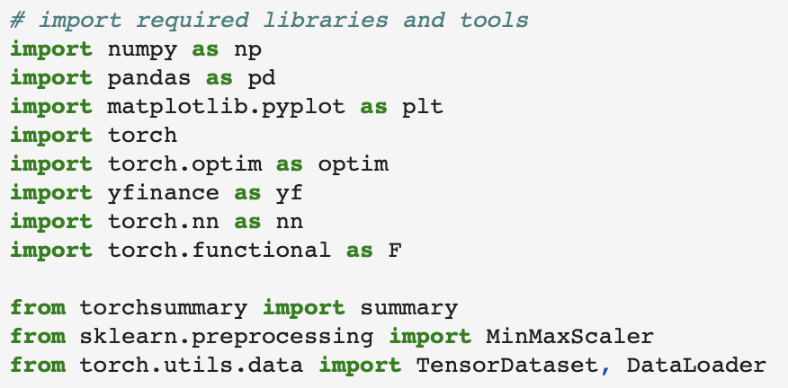

In the realm of finance, predicting stock market trends is both challenging and highly rewarding. This project unveils a
machine learning model that harnesses the power of LSTM networks to forecast stock prices for any publicly traded company.
-
Utilizing Historical Data: The model is trained on historical stock price data, encompassing Open, High, Low, and
Close prices. Data is sourced using the yfinance library, offering a wide scope of possibilities for selecting
different companies by their ticker symbols.

yfinance data features

yfinance data statistics
-
Data Visualization and Preparation: Comprehensive data visualization techniques are integrated, providing insights
into various stock attributes over different time frames, including daily, weekly, monthly views, and moving averages.
The preprocessing stage involves normalization using MinMaxScaler, transforming the Open, High, Low, and Close features
into a sequence format suitable for time series prediction.

graph of AMZN sotck attributes over time

moving average of AMZN stock
-
Model Architecture and Training: The LSTM network, implemented in PyTorch, is designed to capture sequential
patterns within the data. It consists of 64 hidden units and a fully connected layer to output the predicted
values for the four key stock features. The model is trained with the Adam optimizer and a Mean Squared Error
loss function. To ensure optimal performance, the best model is saved based on validation loss, utilizing training,
validation, and test datasets.

model architecture in code

visualization of the underlying LSTM functionality
-
Prediction and Results: Beyond merely predicting stock prices on the test set, the model is capable of forecasting
the next 10 days' stock prices, an invaluable feature for trend analysis. A clear visual comparison between actual
vs. predicted stock prices is presented, allowing for an intuitive understanding of the model's accuracy.

historic AMZN stock prices vs our prediction

un-transformed AMZN price predictions for next 10 days (past last dataset value)
-
Customization and Adaptability: The model offers high customizability, permitting changes to various
parameters like the stock ticker, LSTM architecture, sequence length, and number of epochs. This adaptability
ensures that the model can be fine-tuned to cater to specific stocks or trading strategies.

showcasing where in the code you can replace the company and start date
-
Educational and Research Focus: While the model showcases a blend of machine learning sophistication and financial
expertise, it is crafted for educational and research purposes. It serves as a robust framework for understanding
stock market dynamics and provides a foundation for further exploration and innovation in the field of finance and
machine learning.
-
Technical Dependencies: The project relies on libraries such as PyTorch, yfinance, torch-summary, matplotlib, and
scikit-learn, ensuring a seamless experience whether run locally or on platforms like Google Colab.

imported libraries
-
Conclusion: This LSTM-based stock price prediction model stands as a testament to the synergy between finance and
artificial intelligence. It not only offers a practical tool for stock market analysis but also paves the way for
future research, exploration, and adaptation across various stocks and financial market scenarios.